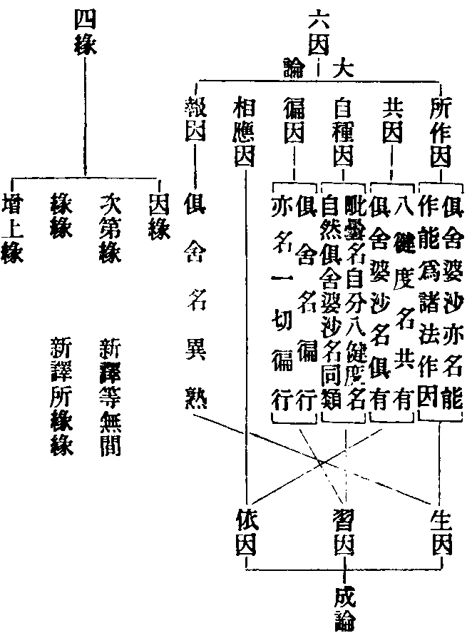
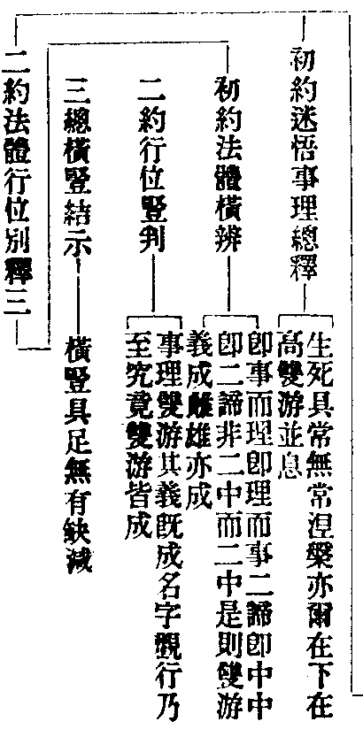

讀教記卷第七
玅玄(七)
提謂經
玅玄(十)(十)復次釋論結集法藏初從波羅柰至泥洹夕凡所說小乘法結為三法藏從初生至雙樹凡說大乘結為摩訶衍藏柰苑之前不預小乘攝何者爾時未有僧寶故不應用提謂為初教也若言提謂是祕密教一音異解者不應在顯露之初。
籤(十)(十三)第五結集難中二初難不預五時次何者下釋不預所以六難一音可見。
玄(十)(十五)若如提謂波利聞五戒不起法忍三百人得信忍四天王得柔順忍皆服長樂之藥佩長生之符住於戒中見諸佛母即是乳中殺人也。
籤(十)(十九)次正明不定即今世發習且以提謂為首提謂猶屬顯露未假祕密故至鹿苑方分顯祕。
玄(十)(二十二)祕密合者初為提謂說五戒法已有密悟無生忍者。
四教義(一)(七)問曰提謂經說五戒明人天善何意不開為五教義耶(云云)答曰三藏教明世間布施持戒禪定即是人天之教並是正因緣所生善法此已為三藏所攝故不須為五也。
光明文句(上)(十一)提謂經云五戒是佩長生之符不死之印即常德也出入不亂往還無間即淨德也統御一身即我德也以立道根即樂德也此是五戒對四德。
記(一)(三十)以大乘人了知五戒體是心性若受若持一一順性性具四德故五無非常樂我淨。
大師只云為三藏所攝而神智以鹿苑收之玄文柰苑之前不預小乘攝又三百人得信忍乃至乳中殺人等者當知二文各有所以初破北地師別立人天教次明引明不定教也釋籤云若言下難一音者此點出大師縱破他師之文非謂提謂無有密悟。
六因四緣
釋籤(十)(十四)言成論三因四緣者三因謂生因習因依因生因者若法生時能與其因如業為報因習因者如習貪欲貪欲增長依因者如心心數法依色香等四緣者因緣者具足三因次第緣者心心數法次第而生緣緣者如識生眼識增上緣者諸餘緣也若俱舍中因緣五因性成論以所作因即是增上故不別立但立報因即生因是自分因即習因是共因即依因是。
止觀(八)(廿四)云何名習因習果阿毗曇人云習因是自分因習果是依果。
輔行(八下)(五)言習因是自分因等者新譯經中名同類因故俱舍云能作及俱有同類與相應徧行并異熟許因唯六種今且依大論略出六因相次消今文論三十二云言六因者所作因共因自種因徧因相應因報因言四緣者謂因緣次第緣緣緣增上緣新譯次第緣名等無間緣緣緣名所緣緣餘二名同(云云)所作因者不礙於他相應因者心心數法同相同緣以心心法共相應故名相應因心心數法以心相應為因名相應因如親友知識和合成事共因者一切有為法各共生因以共生故更相佐助如兄弟同生互相成濟自種因者過去善法與現在善法為因現在善法與未來善法為因惡無記法亦復如是一切各各有自種因徧因者苦集諦下十一徧使名為徧因報因者行善惡因得善惡報名為報因言四緣者如上五因名為因緣心心數法次第無間相續而起名次第緣心心數法託緣生故名為緣緣諸法生時不生障礙名增上緣復次心心數法從四緣生無想滅定從三緣生除於緣緣諸餘心數不相應行及色從二緣生除次第緣及緣緣餘有為法劣故無有從於一緣生者報生心心數法從五因生除於徧因無漏心心數法從三因生謂相應共及無障礙成論但應三因四緣具如玄釋籤第十記今業相發屬習報兩因習因者自種因文兼釋於習果報因因於前世前念善惡故後世後念善惡得起並名習因既心心數法共相因依亦得名為相應因也不障礙故亦得名為所作因也俱有助作故亦名共因若蔽相起亦名徧因以此習因未能招報不名報因言報果者亦但四因所作自種共因報因當果相現故云報果據理實是報因而已不與五部染法為通因故非徧行因非心心所無相應因若以習因對四緣中得是因緣等三不託緣而起無所緣緣習因起時亦有增上及有無間相續之義亦名次第報果但在增上因緣夫因緣之義佛法根本背邪向正之始入道修觀之源故習佛法者不可全迷。
垂裕記(五)(廿五)四緣六因及以十二並是生死生死即三道(云云)十二秪是四六而已故知但是離合說耳且如無明即是行家之能通也即同類因行必四相即俱有也行中五部亦同類也無明行中心心所法共行共感所作必同行有必招識等異熟此行必有徧行五部之惑若四緣中論云增上即能作因緣五因性比六因說可知。
正理論又六因中徧行一因唯是染汙餘之五因通染不染又相應徧行二因唯心餘之四因通色通心又徧行異熟二因通三界繫餘之四因通及不通繫徧行異熟唯有漏餘之四因通漏無漏又徧行異熟二因唯是非學非無學餘之四因行通三種(凡夫學人無學人)又六因中能作一因通四諦及非諦攝徧行異熟二因唯通苦集餘之三因通苦集道三諦攝。

止觀云集諦下十一徧使名徧因者補註(十四)(十五)云苦下五見及疑無明集下邪見見取無明疑此之十一徧為五部作因名徧因也五部染法者四諦下見惑為四修惑為一即五也北峰曰因緣者親生為因疎助為緣然約法顯相且以三道為言則煩惱為因業行為緣因緣和合則招苦報報起惑業循環無窮也或問成論三因於六因中如何會同曰生因既云若法生時義兼所作亦可所作即增上緣非生因攝習因既云貪欲增長貪欲是惑即兼徧因依因既云心心數法兼相應因餘三籤文自對也或問俱舍頌云許因唯六種釋籤却云五因性者何也曰六因四緣大論所釋順有宗義故具明六若成論但說三因乃順空宗義所作即是增上緣故故不別立但云五也前後存沒義恐如此當知六四既以三道為當體即以四大為所依也。
楞伽制肉
楞伽阿跋多羅寶經四卷(宋天竺三藏求那跋陀羅譯)。
入楞伽經十卷(元魏三藏菩提流支譯)。
大乘入楞伽經七卷(大唐于闐三藏實叉難陀譯)斷食肉品(四字函第六卷唐譯)爾時佛告大慧一切諸肉有無量緣菩薩於中當生慈愍不應噉食(云云)是故菩薩不應食肉(云云)若我聽許聲聞食肉我則非是住慈心者修觀行者行頭陀者趣大乘者云何而勸諸善男子及善女人於諸眾生生一子想斷一切肉大慧我於諸處說遮十種許三種者是漸禁斷令其修學今此經中自死他殺凡是肉者一切悉斷(偈云)象脇與大雲涅槃央掘摩及此楞伽經我皆制斷肉。
釋籤(十)(十一)寄此兼判楞伽成方等部他云楞伽非第三時七卷經文第六卷中大慧問言外道尚遮不許食肉何況如來大悲含育而許自他令食肉耶若大乘中梵網已制猶作此說當知楞伽四含之後為漸制之始下佛答中仍云菩薩不應食肉故知仍存小教中開 玅玄(十)(十一)。
記主研覈制肉之文判屬方等既對梵網已制而說則曰仍云菩薩及以漸制何但制菩薩也北峰謂三乘俱制葢有取焉偈指涅槃者此乃譯師於滅後見涅槃亦制故引成流類足偈文云。
雙游
涅槃經(三)(三)長壽品云何共聖行娑羅迦隣提釋籤(十)(十七)大經第八鳥喻品云善男子鳥有二種一名迦隣提二名鴛鴦游止共俱不相捨離此品答前共聖行。
原夫涅槃開演常宗為顯常即無常無常即常故取喻二鳥游息共俱以答共聖行之問也疏(七)(四)此中備有凡凡共行(圓教內凡外凡共修圓行)凡聖共行(生佛雖異常無常一)非凡非聖共行(理即之位非內外凡非分極聖即常無常用未始暫缺也)又云取其雌雄共俱飛息不離以況一中無量無量中一(一是常無量無常也顯二用相即)非一非無量(雙息)而一而無量(雙飛)呼為雙流乃名共行(文)凡聖共修故稱曰雙非約二用立共行名又此二用經意雖局菩薩所修法體徧收一切依正諫書約二用分割為難解謗準本疏三翻釋義二用相即顯生身即尊特也竹菴以事理二造對於二用又以一法為並息二法為雙游未也應先了理造三千之體非常非無常事造三千之用能常能無常二用既全體作相即之義斯成本疏稍難今當略辨分文為二。

初云生死涅槃在下在高者迷悟對分耳眾生迷故有生死名為下諸佛悟故得涅槃名為高以此經正談三德涅槃乃如來所證之果然所證果本非別法全指眾生生死三道當體常寂良以生佛各具三千故常無常二用高下無虧雖爾各具迷悟乍分互即互融體用不二雙游者全體起用具常無常事造三千也並息者指用歸體非常非無常理造三千也事理既即游息亦俱法法咸然心心徧具故在高在下平等無差次文即事而理即理而事者事即事造三千理即理造三千事造之中具於二用用全體起當處即理理造之體法法具足互融互攝不可思議即此玅體起於二用體既互攝用豈相乖故知二用克就事論全由理圓故二用即然此事理本無二體全是三諦故有次番二諦即中中即二諦三千諸法一一無非即三諦故中邊既即三豈有三三諦俱亡雖亡而照故有第三亡照釋也三諦俱亡故非二中雖亡而照三諦俱照故而二中雖有三番後二只是中邊亡照又復後二只是釋成初番事理法體而已故知欲顯事中二用相即若不約圓詮事理法體而辨則相即之義無自而明矣既約法體故曰義成雌雄亦成者雄喻於實即常用也雌喻於權無常用也所喻二用既即能喻雙游可知故云亦成豎判者初二句結前生後其語猶略應云約事理相即明二用雙游其義既成名字等五前約法體橫判雖曰法法全體約行人修證何妨在下在高高下雖殊而位位之中三千具足故迷則俱迷悟則俱悟故曰名字已去不唯顯佛九亦同彰乃至果成咸稱常樂二用相即位位具足故曰皆成結中橫豎只是六即理同故即法法實相橫義也事異故六修證迷悟豎義也即橫論豎一一具足即豎論橫無有缺減即橫即豎事理義圓矣。
華嚴教主
華嚴經云摩耶夫人為盧舍那母(云云)。
梵網經云爾時釋迦從初現蓮華藏世界東方來入天宮中說魔受化經已下生閻浮提迦夷羅國母名摩耶父名白淨吾名悉達七歲出家三十成道號為釋迦牟尼於寂滅道場坐金剛華王座說法。
玅玄(十)(十七)寂滅道場始成正覺(云云)此乃明釋迦最初說頓也。
文句(九)(十八)梵網經結成華嚴教華臺為本華葉為末別為一緣作如此說而本末不得相離。
玅樂(九)(廿七)若華嚴中十方臺葉互為主伴此梵網經唯一臺葉故天台戒疏判云華臺華葉本迹之殊所以華臺華葉本迹定者被緣雖別道理恒同所結既同能結豈別。
淨名玄(一)盧舍那佛說華嚴經(云云)。
玅宗(下)(七)有須現者即為現之如梵網華嚴及此經等相多身大也不須現者即以力加令於劣身不取分齊見三十二相即無有邊以知丈六是法界故也。
解謗(廿)(三)汝執藏塵為尊特相樹下之身有此相否故昇須彌山頂品云爾時如來威神力故十方一切世界一切四天下閻浮提中悉見如來坐於樹下各有菩薩承佛神力而演說法靡不自謂常對於佛爾時世尊不離一切菩提樹下而上昇須彌向帝釋殿豈非華嚴是千百億應身所說此身既被別圓之機見是尊特何須獨指華臺受職身耶。
娑婆世界五時施化說華嚴教葢千百億身中之一乃現相之本也解謗己闢淨覺之失後人不本經文有現起之相尚執三雙六隻之義以即劣尊特而申明之未詳鑑堂云示現與現起看經中有文無文出解謗書。
涅槃五味
玅玄(十)(十五)今依大經二十七云置毒乳中乳即殺人酪酥醍醐亦能殺人此謂過去佛所嘗聞大乘實相之教譬之以毒今值釋迦聲教其毒即發結惑人死輔行(九下)(十四)爾時有菩薩名無垢藏王白佛言如佛所說諸佛菩薩成就智慧功德百千萬億實不可說我意猶謂不如此經能生諸佛阿耨菩提佛印可竟佛言譬如從牛出乳譬從佛出十二部經從乳出酪譬從十二部經出修多羅從酪出生酥譬從修多羅出方等典從生酥出熟酥譬從方等出般若波羅蜜從熟酥出醍醐譬從般若波羅蜜出大涅槃。
玅玄(十)(廿四)若華嚴為乳三藏為酪此則方便味濃大乘味薄(云云)此取相生次第為譬不取濃淡淺深籤(十)(廿七)不以味濃為乳味淡為酪故知自約次第相生為譬。
玅玄(十)(十八)漸機於頓教未轉全生如乳三藏中轉革凡成聖喻變乳為酪即是次第相生為第二時教不取濃淡優劣為喻也。
籤(十)(廿二)次漸機下釋味名所以言不取濃淡者秪是小機於華嚴如乳非酪濃於華嚴。
玄(十)(十七)又頓教最初始入內凡仍呼為乳呼為乳者意不在淡以初故本故。
義例(六)六者名義通局如置毒譬經中唯譬五道不同佛性不變五味唯喻一代五時濃淡濃淡雖殊皆從牛出今文從義處處徧入或定不定或行或人或教或位或時或部不可壅義而守其名故用置毒則有兩種醍醐殺人若用五味則有兩種乳不等。
別行疏記(下)(十五)應知約教明五味者不取濃淡但語相生以其頓乳即醍醐故若約機者有濃淡義然就三乘極鈍者說為此一類於彼華嚴全無顯益如鯹血乳說三藏時此機成酪次第漸濃至於極味。
四教儀問將五味對五時教其意如何答有二一者但取相生次第二者取其濃淡。
北峰師曰原經意由無垢藏王歎涅槃教勝佛印可後敘出五味故知若非濃淡歎教不成若相生者約義通也玅玄約教相生次第則不取濃淡若約機行不無其義四明之說善矣義例云故用置毒則有兩種醍醐殺人若用五味則有兩種乳不等然置毒兩種非無乳等五味兩種非無醍醐葢互顯也若兩箇唯字望下義通八種云。
通別五時
籤(十)(廿二)言次第者華嚴初云於菩提道場始成正覺在初明矣諸部小乘雖云初成自是小機見為初耳據信解品脫玅著麤故知居次大集云如來成道始十六年故知方等在鹿苑後仁王云如來成道二十九年已為我說摩訶般若故知般若在方等後亦知仁王在大品後法華云四十餘年大經云臨滅度時當知次第有所據也。
玄(十)(廿二)夫五味半滿論別別有齊限論通通於初後若華嚴頓乳別但在初通則至後故無量義云次說般若歷劫修行華嚴海空法華會入佛慧即是通至二經又像法決疑經云今日座中無央數眾各見不同(云云)夫日初出前照高山日若垂沒亦應餘輝峻嶺故蓮華藏海通至涅槃之後況前教耶若修多羅半酪之教別論在第二時通論亦至於後何者迦留陀夷於法華中面得授記後入聚落被害作結戒緣起又如身子法華請主後入滅均提持三衣至佛問(云云)當知三藏通至於後若方等教半滿相對是生酥教別論是第三時通論亦至於後何者陀羅尼云(止)法華後(如後授記中節)般若帶半論滿是熟蘇教別在第四時通論亦至初後何者從得道夜至泥洹夜常說般若(云云)當知般若亦至後若涅槃醍醐滿教別論在第五時通論亦至於初何者釋論云從初發心常觀涅槃行道前來諸教豈無發心菩薩觀涅槃耶(云云)此則通至於前若法華顯露邊論不見在前祕密邊論理無障礙故身子云我昔從佛聞如是法見諸菩薩授記作佛豈非證昔通記之文。
籤(十)(廿六)初明前四味通後次若涅槃下明涅槃法華通至於前初文自四(云云)初文又二初明通二經次明通至涅槃初文言二經者謂般若法華以般若亦得名華嚴故法華佛慧不殊初故次通至涅槃為二初正引經次夫日下述意初文者彼經既有住世無量劫之言又見報身蓮華藏海說心地法門等故知華嚴至涅槃後以彼像法決疑結涅槃故(云云)次文者二人雖於法華得記此後猶作三藏結戒之緣(云云)文在涅槃故知涅槃共結小藏(云云)通記者昔日授記佛意不壅小乘情隔自無悕取況約祕密已記二乘據斯以論通至鹿苑。
玄(十)(十)如提謂時無量人天得無生忍成道六年已說央掘摩羅涅槃云我初成道恒沙菩薩來問是義如汝無異當知鹿苑不應純半。
籤(十)(十三)次引諸文皆是十二年前已有滿教淨名疏(五)(三十)問自淨名彈訶之前亦應有滯方便者因訶轉教何不出之答未可定判故不別出。
略記(下之上)(一)問自淨名等者亦應合有方等生酥通乳酪耶若其有者何不說之答文雖爾應須具如法華玄文第十卷中今若復欲論理有者鹿苑理須密說彈斥又華嚴中四何須更論亦是其例既其一切俱通初後豈可方等不通於初準此問前亦應問後文無者略若爾一音之教非無小得但失於鈍以歷五時故不全用玄文所引。
玄(十)(八)問殃掘之經六年所說列次第眾委悉餘經彈斥明常分明餘教釋梵四王及十弟子乃至文殊皆被訶斥同聞宛然應入次第。
籤(十)(十二)言央掘列眾者彼經初云爾時世尊與無量菩薩摩訶薩及四眾天龍八部毗盧遮富單那等日月天子及護世等皆云無量。
不明別五時則不見化儀次第不明通五時則不見隨宜赴物問玅玄明般若法華涅槃皆有徧前獨方等不明者何曰玅玄云方等彈訶教在三藏之後被訶之時應在十二年前有云若約顯露如玄文則無若約祕密如淨名疏則有也有引殃掘經是如來成道六年所說證方等顯露徧前有云殃掘經六年說者乃祕密說非今結集者若今結集者文中即無六年之說葢由天台見他文指出耳却引玅玄如提謂等文為證頃因此說曾閱彼經雖無六年之文正是玄籤第十所引者葢在大藏量字函四卷成文宋天竺三藏求那跋陀羅譯。
方等授記
玅玄(十)(廿三)陀羅尼云先於王舍城授聲聞記今復於舍衛國祇陀林中復授聲聞記昔於波羅柰授聲聞記身子云世尊不虗所言真實故能第二第三授我等記故知方等至法華後。
籤(十)(廿七)言至法華後者即指王城授記同於法華舍衛國記即指方等在法華後彼經下文云舍利弗聞文殊得記問文殊師利於汝意云何文殊語舍利弗汝意云何猶如枯樹更生華不(云云)燋種生芽不舍利弗言不也文殊言若不可得云何問我得記生歡喜不授記無形無相無我無有言語無去來今猶如野馬如是觀者乃名得記此文是文殊破舍利弗得記之相。
文句(四)(五)七得記不得記者(云云)。
大乘入楞伽經(第六卷變化品四字函)爾時大慧菩薩摩訶薩復白佛言世尊如來何故授阿羅漢阿耨多羅三藐三菩提記(云云)佛言諦聽當為汝說大慧我為無餘涅槃界故密勸令彼修善薩行此界他土有諸菩薩心樂求於聲聞涅槃令捨是心進修大行故作是說又變化佛與化聲聞而授記別非法性佛大慧授聲聞記是祕密說。
輔行(六下)(三)問若言方等不記二乘何故楞伽第二變化品中大慧問佛如來何故授聲聞記佛言三意故記一為入無餘界者密勸修菩薩行故二為此界他土菩薩樂求聲聞涅槃者勸捨此心修大行故三變化佛授聲聞記非法性佛大慧授聲聞記是秘密說判曰今聞法華是顯露記不同方等隱密與記若據斯理淨名大品皆應有之何獨楞伽故方等云第二第三授我等記初意自為已入滅者次第二義但為斥於鈍根菩薩對彼說記何關二乘第三判非法性佛者此是以實而隔於權未若法華顯久遠本我土不毀而眾見燒況法性之佛尚不記菩薩何獨聲聞故知三義並異法華當知大慧發起密說是故發問授記之事故知彼經義屬方等與法華異豈待固論數數斥奪二乘等故故法華中三周授記偏語聲聞者為顯餘經所不說故是故委授劫國之名菩薩授記處處有文故但通途云當作佛乃至本門某生當得法華稱玅斯言可凭。
玅樂(三)(廿六)如華嚴法界何所不含隔彼聲聞使如聾瘂後分雖有授記事乖鹿苑初聞一向唯小方等尚昧般若猶生雖楞伽方等有記小之言楞伽乃密對菩薩方等為斥奪聲聞故一代教文彰灼唯此。
方等陀羅尼授記品(第二卷覆字函)佛告五百大弟子眾汝等亦當各各作佛俱同一號號寶月王如來無所著至真等正覺(云云)。
記主云楞伽乃密對菩薩方等為斥奪聲聞葢點云楞伽方等陀羅尼二經之意也楞伽密記小乘佛對菩薩說出方等陀羅尼經小之後舍利弗與文殊問答之文即斥奪也。
十行橫學
玅玄(十)(廿四)別教復有四(云云)。
釋籤(十)(廿七)別教復有四者別教十住修生無生十行修無量十向修於無作登地證無作故云有四又十行中習諸佛法具足於一十六門亦名為四問住已習八何故行中更習十六答前是自行隨用一門後為化他是故行中更習前八是故十六俱須廣習。
玄(四)(八)道滅即苦集苦集即道滅。
籤(五)(三)苦集即道滅者發心之來誰不為斷煩惱生死廣集佛法求無上道但此教意達道滅體於生死煩惱之中故云眾生心行中求此則實知真斷玅修理證故豎行住行猶迷迴向薄知初地少證即其意也籤(五)(一)今此四四諦雖並在別教既約生滅等四豎判一教別教菩薩即此自行而用化他故十行中橫辨此四全為利物所以四相各附彼教而為相狀。
輔行(六下)(一)應知此中若全不兼文之元意如何次第出假之位即能授他圓教四門。
輔行(六下)(四)圓教六根名下根者出假名同功逾十向此是相似圓融三諦不同次第出假之位。
輔行(六下)(五)通別入空但照六界兩教出假長短不同尚未能出佛法界假豈能九界見即中耶(云云)縱帶此空即十界假既無法性的非圓融。
北峯師曰良以別教迷中重故不能頓修中道之觀遂使如來說此一教始終次第邊居中外破九顯一機緣稟之依教起行於十行中自既未能圓修安能為他圓說住行猶迷自行化他皆須斷九考之文理只是但中故雜編云十向圓修可由實道十行實無作且順權方良以修中之位已深出假之位尚淺位深故知昔日化他無非玅行位淺故知將來自行亦是但中不應以實難權以他妨自。
讀教記卷第七